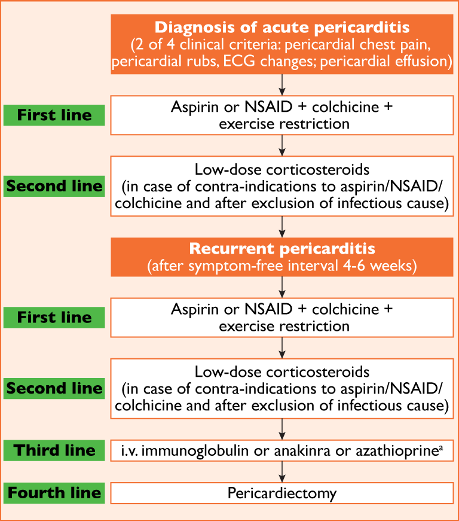

Figure 2 Therapeutic algorithm for acute and recurrent pericarditis
ECG = electrocardiogram; IVIG = intravenous immunoglobulin; NSAIDs = non-steroidal anti-inflammatory drugs.
Low-dose corticosteroids are considered when there are contra-indications to other drugs or when there is an incomplete response to aspirin/NSAIDs plus colchicine; in this case physicians should consider adding these drugs instead of replacing other anti-inflammatory therapies.
a Azathioprine is steroid-sparing and has a slow onset of action compared with IVIG and anakinra. Cost considerations may apply considering the cheaper solution first (e.g. azathioprine) and resorting to more expensive options (e.g. IVIG and anakinra) for refractory cases.